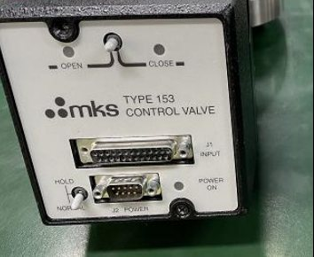

真空・冷水機
泵、閥門與冷水機。
泵大修、閥門維修、MKS 真空計・CMP 氣動單元、電源・控制設備維修。
真空・廠務設備
真空泵・閥門・冷水機服務


乾式幫浦
主流系列大修與供應 ― Edwards iH／iXH／iQL、Ebara ESA／ESR／EV、Alcatel A／ADS／ADP、Busch。
分子幫浦・閥門
STP 分子幫浦維修、擺閥大修、MKS・VAT 真空閥維修（含測漏）。
冷水機
壓縮機冷水機、熱交換器、熱電冷水機，訂製冷卻方案。
真空設備｜MKS 真空計
MKS 真空計的維修・校準及相容品方案
我們承接 MKS 電容薄膜真空計（Baratron®）的故障診斷、維修、校準及定期保養。對於难以維修或已停產的機型，可提供相容品方案（非原廠正品）。
維修對象機型（能否維修需逐案確認）
- Baratron®：622／623／625／626／627／628／629／631
- Baratron®：722／727／728／740・E27H／E28H／E29H
- MKS 902 系列
- 感測器：Standard／Etch Baffle／加熱型（45・100・150・200℃）／非加熱型
- MKS 以外品牌的電容薄膜真空計維修亦可洽詢（能否對應需逐案確認）
服務內容
- 故障診斷：定位電路、感測器、加熱單元等的故障部位
- 維修：故障部位的零件更換與修複（更換零件的類型在報價時確認）
- 校準：精度確認・零點調整・量程校準（可出具校準證書）
- 定期保養：定期點檢・清潔・預防性維護
- 無法維修或已停產：提供相容品方案（非原廠正品）
- 未列出的機型：確認實物規格（量程・接口・输出）後，逐案評估能否提供相容品方案
相容品：對象機型（非原廠正品）
- 對應 MKS 型號：624H／625H／626D／627H／628H／631F／E27H／E28H／DA02
- DA02 可提供支援 EtherCAT 输出的相容品
- 上述以外的 MKS 型號（622・623・722・727・728・740・902 等）需確認規格後另行商议
- 其他品牌可替換型號示例：INFICON CDG045D／CDG025D、Edwards Barocel 600／655／658／659、Setra 750／760、Brooks CMC／XacTorr、ANELVA M-341DG／M-342DG
相容品：主要規格
- 金屬膜片式・镍基合金本體・全焊接結構，適用於腐蝕性氣體
- 滿量程：1000／100／10／1／0.1 Torr（中間量程按最接近的標準量程規格）
- 精度等級：读數的 0.15%／0.25%／0.5%（100℃ 及以上自 0.25% 起）
- 分辨率・響應時間・溫漂等詳细規格可另行提供
- 感測器溫度：非加熱／45℃／100℃ 等（高溫規格需逐案確認）
- 電源 ±15 V，输出 0–10 V DC，DB15，2 個設定點
- 输出・通信規格（4–20 mA、RS485、DeviceNet、Ethernet、EtherCAT 等）可另行洽詢
- 自動溫度补偿，滿量程・零點調整功能（一鍵調零）
- 接口：NW16-KF／NW25-KF／8VCR／4VCR／12mm 管
- 亦可提供陶瓷膜片型（滿量程 1～1000 Torr；交付形式另行说明）
選定相容品時的確認事項
- 被替換產品的品牌・型號、測量量程・所需精度
- 安裝位置・法兰／接口・安裝姿态，感測器溫度・腔體壁溫度
- 输出（模擬／數字）・電源（±15 V／24 V）・實際使用的設定點數量
- 製程氣體・副產物，是否用於壓力控制
- 相容品以特定的連接器與输出配置供貨，針脚定义（继電器・状态信號等）需逐一確認
- 不可與現有原廠控制器（顯示器）組合使用
- 相容品的保修条件以個別合同為準
※能否對應将依機型與状态逐案確認。所列廠商名及型號僅表示對象設備，本公司並非各廠商的正規代理商或認證維修商，本服務及相容品均未获廠商授权。相容品非原廠正品，所列規格為相容品規格。相容品的保修条件以個別合同為準。如需校準基準器或溯源證明，請事先洽詢。相容品及維修品如涉及出口或携帶出境，可能需要依據日本《外汇及外國貿易法》進行出口管制判定及许可。Baratron 是 MKS Instruments, Inc. 的註冊商標，VCR 是 Swagelok Company 的註冊商標。其他所列公司名稱及產品名稱為各公司的商標或註冊商標。
CMP・真空設備｜維修服務
CMP 氣動單元・真空控制閥維修
我們承接 Applied Materials CMP 設備所搭載的 MKS 制 4-PORT／PLUS 4-PORT UPA（氣動單元）的維修與功能測試，以及真空控制閥的維修與大修。

CMP 用 4-PORT／PLUS 4-PORT UPA
- 對象設備示例：MKS 制 4-PORT／PLUS 4-PORT UPA（AMAT P/N 0190-15840 等，P/N 及版本以铭牌逐案確認）
- 搭載設備：300mm CMP 設備（Reflexion® LK 等，適配性需逐案確認）
- UPA（Upper Pneumatic Assembly）：控制研磨頭各區域壓力的氣動單元（多區壓力・流量調節器）
- 同系列其他 P/N 及版本需確認配置與版本後再行商议
UPA 維修・功能測試
- 故障診斷・維修（如需更換零件，所用零件類型在報價時確認）
- 維修後安裝於測試治具進行功能測試
- 維修範圍與確認項目根據單元状态另行说明
真空控制閥
- 對象設備示例：MKS Type 153 控制閥
- 對象設備示例：VAT 65048-PHCG-APJ1（擺閥）／61238-PAAP-AIM4（閥門控制器）
- 擺閥：閥體清洗・全部 O 形圈更換（標準 FKM，可使用客戶提供的 O 形圈）
- 擺閥：执行器保養（Motor／Solenoid／Plain）、軸承更換
- 擺閥保養後測試：He 測漏・功能測試
委托须知
- 維修後的可用期限及保修內容依機型和状态另行说明
- 如难以維修，将與您协商後續處理方式
- 本服務並非由 Applied Materials、MKS 或 VAT 提供或授权
※能否對應将依機型、配置與状态逐案確認。Applied Materials、MKS、VAT 為對象設備的製造商名稱，本公司並非各公司的正規代理商或認證維修商，本服務未获廠商授权。Reflexion 是 Applied Materials, Inc. 的註冊商標。其他所列公司名稱及產品名稱為各公司的商標或註冊商標。
設備電子單元｜維修
電源・驅動・控制設備的元器件級維修
我們對半導體製造設備及廠務設施的電源單元（含射频電源）、伺服・变频器等驅動設備、PLC・HMI・工控機・控制板以及儀器儀表進行元器件級維修，助力縮短設備停機時間。
電源單元
- 半導體製造設備用電源單元
- 射频電源（例：Advanced Energy 產品）
- 高壓電源
- 開關電源・直流電源・大功率可調直流電源
- 對內部電源板・控制板進行元器件級維修
- UPS（不間斷電源）電路板維修亦可洽詢（能否對應需逐案確認）
驅動設備
- 伺服驅動器（安川・三菱馬達・松下・FANUC・Siemens・Heidenhain・B&R・Kollmorgen）
- 变频器（安川・Siemens・ABB・Schneider Electric・Danfoss・Allen-Bradley・Lenze・Vacon）
- 伺服馬達（FANUC・Siemens・Allen-Bradley・MOOG・B&R・ABB・KUKA）
- 工業機器人的控制器・伺服系統（FANUC・安川・ABB・KUKA・川崎・不二越・雅馬哈，可洽詢）
- 软启動器（ABB・Siemens・Schneider Electric・Eaton），直流調速器（Siemens・Eurotherm・Parker）
控制設備・電路板
- 控制板・I/O 板・各類 PCB 板卡
- 工控機（Advantech・Siemens 等）
- PLC（Siemens・欧姆龙・Allen-Bradley・三菱馬達 Q 系列）
- HMI・触摸屏（Pro-face・Siemens・Allen-Bradley・B&R・Beijer）
儀器儀表
- 電子儀器：示波器・频谱分析儀・信號發生器・LCR 測試儀（Keysight・Tektronix・Rohde & Schwarz・Teledyne LeCroy 等）
- 設施・環境儀器：氣體檢測儀・水質分析儀・流量計・數據記錄儀・風量計・红外熱像儀（GRAPHTEC・Endress+Hauser・HACH・Fluke・FLIR・testo 等）
- 儀器校準需求請另行洽詢
服務形式
- 維修・保養，升級・改造
- PLC 控制系統的软硬體維修及工程改造
- 不限品牌均可洽詢（能否對應需逐案確認）
- 交期及保修內容依設備和状态另行说明
- 如需更換零件，所用零件類型在報價時確認
※能否對應将依設備與状态逐案確認。所列廠商名及機型名僅表示維修對象設備，本公司並非各廠商的正規代理商或認證維修商，本服務未获廠商授权。如需更換零件，所用零件類型在報價時说明。所列公司名稱及產品名稱為各公司的商標或註冊商標。